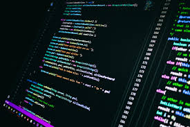
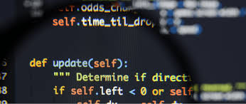

O programador é o profissional responsável por traduzir regras de negócio, lógica e ideias em linhas de código. Ele combina linguagens de programação, algoritmos, arquitetura e bancos de dados para criar soluções tecnológicas que resolvem problemas reais.

Nesta página você vai conhecer o que um desenvolvedor faz no dia a dia e como ele atua em diferentes áreas da tecnologia, desde a criação de interfaces digitais (Front-End) até a estruturação de servidores e inteligência de dados (Back-End).

• Desenvolve sistemas, aplicativos mobile, sites e plataformas web utilizando diferentes linguagens.
• Cria e gerencia bancos de dados, integra APIs e cuida da segurança e performance da aplicação.
• Analisa requisitos de software, resolve bugs e planeja a arquitetura técnica de novos produtos.
Em resumo, o programador transforma linhas de código em experiências digitais funcionais, escaláveis e eficientes para o usuário, conectando ideias e tecnologia por meio da lógica de programação.